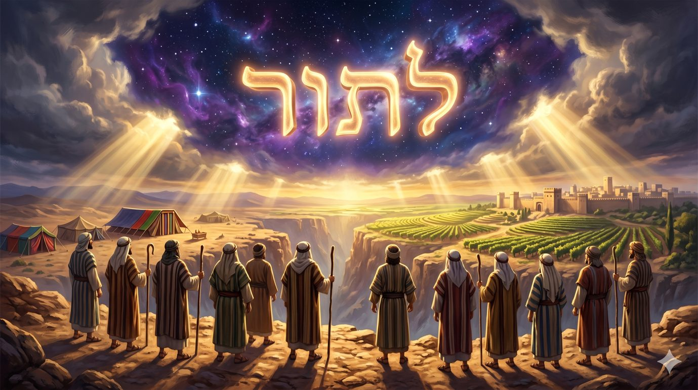
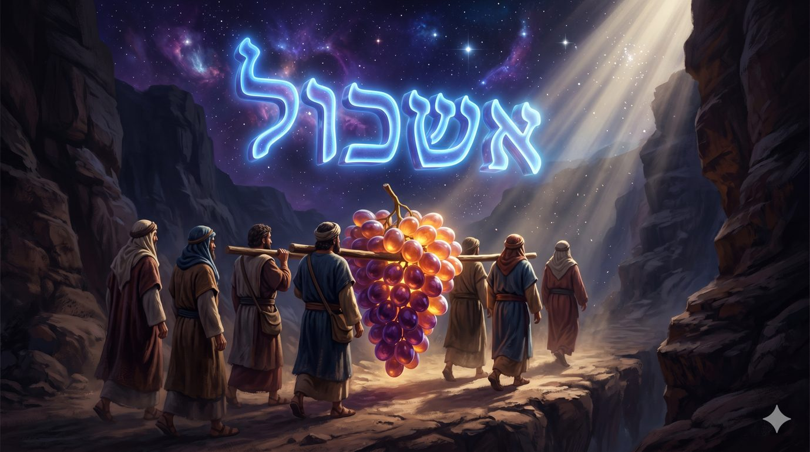
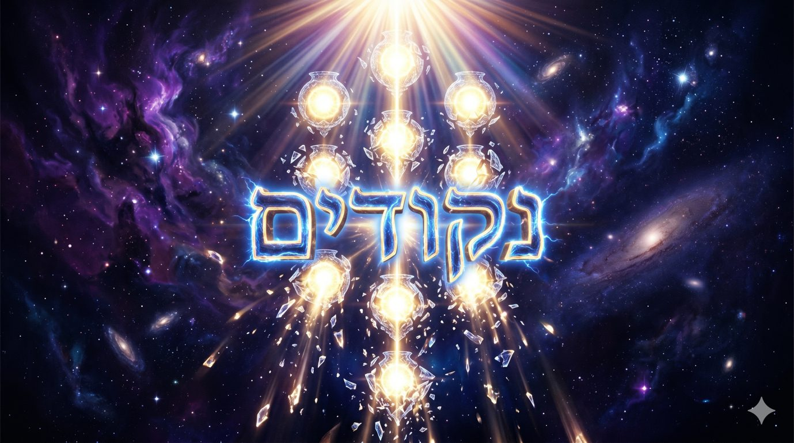
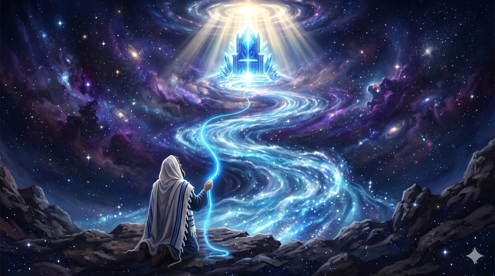
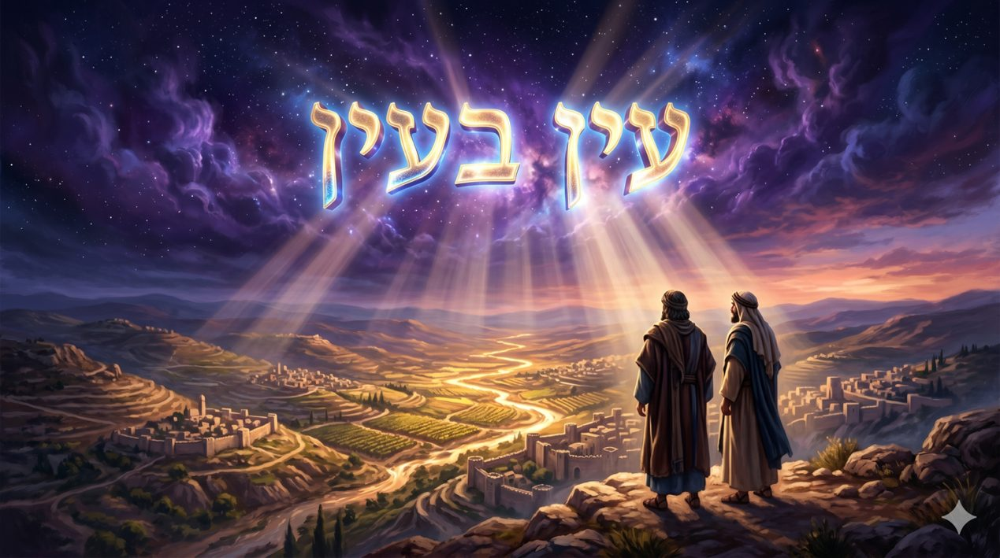

לָתוּר Latour Explorer pour mieux voir
A l’aube de la conquête de la terre promise, la paracha s’ouvre par un ordre de reconnaissance quasi-militaire : “Envoie pour toi des hommes, qu'ils explorent la terre de Canaan, veyatourou et eretz Kenaan “(Bamidbar 13:2). Le verbe utilisé pour signifier l’exploration de la terre promise est לָתוּר / latour. Puis traversons la paracha entière, le rapport des explorateurs sur la dangerosité apparente de la terre d’Israël, le désespoir et les larmes du peuple, le décret de mort de la génération du désert pendant près de des quarante ans, les lois des libations des sacrifices et de prélevement de la hallah, et arrivons au dernier paragraphe, celui qui formule la mitsva des tsitsit. La Torah y formule un interdit étrange : vous n'explorerez pas derrière votre coeur et derrière vos yeux, velo tatourou aharei levavh’em veaharei eineih’em (Bamidbar 15:39). Le même verbe revient précisément, à la lettre près, de part et d’autre du texte.

Cette répétition ne peut pas être un hasard. La Torah ne dispose pas ses mots aléatoirement. Quand un verbe ouvre une paracha et la ferme, quand il encadre un récit de catastrophe nationale et une mitsva quotidienne, c'est que la paracha entière doit été comprise grâce à lui. Rachi, sur le dernier verset, explicite le lien : le coeur et les yeux sont les explorateurs du corps, ils lui servent d'intermédiaires pour les fautes, l'oeil voit, le coeur désire et le corps accomplit. Les explorateurs de la terre et les explorateurs du corps portent le même nom parce qu'ils font la même chose.
Mais alors que fait l'oeil quand il regarde ? Nous croyons savoir : il enregistre, il constate, il transmet. L'oeil serait une fenêtre neutre, un instrument d'optique, et le monde entrerait en nous tel qu'il est. Or la paracha de Chelah Leh’a est peut-être le démenti le plus violent que la Torah ait opposé à cette croyance. Car les explorateurs n'ont pas menti, au sens où ils n'ont rien inventé. L’enorme grappe, les géants, les villes fortifiées étaient réelles. Tout ce qu'ils ont rapporté était exact, et leur rapport a pourtant entraîné la chute d'une génération entière, vouée à mourir dans le désert.

Commençons par les faits. Douze hommes sont envoyés, un par tribu, et la Torah prend soin de les nommer un par un avant de préciser : tous étaient des hommes, représentants les tribus d'Israël ( Bamidbar 13:3 ). Rachi le souligne, le mot anachim désigne toujours des hommes d'importance, et à cette heure-là ils étaient encore kecherim, intègres. Ce ne sont pas des espions. Ce sont des princes, choisis sur l'ordre de D.ieu, mandatés par Moché, l'élite spirituelle d'une génération que la tradition appelle “dor dea”, la génération de la connaissance.
Leur mission dure quarante jours. Ils montent par le Néguev, atteignent Hébron, parviennent jusqu'au torrent d'Echkol. Là, ils coupent un sarment portant une seule grappe de raisin, et il fallut la porter à deux sur une perche ( Bamidbar 13:23 ). Le Talmud Bavli ( Sota 34a ) déplie la scène avec une précision presque cinématographique : huit hommes portaient la grappe, un portait une grenade, un portait une figue, et Yehochoua et Calev ne portaient rien. La terre tenait ses promesses au-delà de toute attente. Un seul fruit exigeait huit épaules.
Au retour, le rapport commence avec une exactitude irréprochable. “Nous sommes venus dans la terre où tu nous as envoyés, et c'est vrai qu'elle ruisselle de lait et de miel, et voici son fruit” (Bamidbar 13:27). Tout est vérifiable. La grappe est là, posée devant le peuple, énorme, indiscutable. Puis viennent les autres faits, tout aussi exacts : le peuple qui habite la terre est puissant, les villes sont fortifiées et très grandes, nous y avons vu les enfants d'Anak, les géants. Amalek habite le Néguev, le Hittite et le Yebousite la montagne, le Cananéen la mer. Le rapport a la précision d'une carte d'état-major et ne contient pas une seule erreur factuelle.
Et c'est précisément cela qui doit nous arrêter. Si les explorateurs avaient inventé des géants, falsifié des mesures, dessiné des forteresses imaginaires, leur faute serait banale et leur histoire sans intérêt pour nous. Un mensonge ordinaire ne mérite pas quarante ans de désert. Ce que la Torah a voulu graver dans la mémoire d'Israël est infiniment plus troublant : on peut dire la vérité des faits et trahir la vérité du monde.
Tout ce que les explorateurs ont rapporté était exact, et c'est précisément le problème, car la catastrophe ne s'est pas glissée dans leurs informations, elle s'est glissée dans leur regard.
La paracha nous interroge alors, au travers d’un rapport véridique qui est un mensonge, de faits exacts qui produisent une catastrophe, d’un regard qui détruit ce qu'il regarde. Et elle se referme sur un fil d'azur noué aux quatre coins du vêtement qu’il faut regarder.
Si la faute était une faute du regard, la réparation, le tikoun sera une rééducation du regard.
Ce chiour propose, avec l'aide du Ciel, d'explorer le verbe לָתוּר / explorer (latour), qui ouvre et ferme la paracha de Chelah Leh’a, à travers le récit des douze explorateurs et la mitsva du tsitsit. À travers les éclairages du Talmud Bavli Sota et Menahot, du Zohar Chelah Leh’a, du Maharal de Prague, du Ari z"l dans le Etz Haïm sur le monde des points né de la vision dont les réceptacles se sont brisés, et du Sfat Emet, nous tenterons de montrer que le regard n'est pas un instrument neutre. Il précède l'objet, il fabrique ce qu'il voit, il peut briser le monde en points séparés ou le relier en un seul visage. La faute des explorateurs était une brisure du regard, et le fil d'azur du tsitsit est l'échelle par laquelle l'oeil remonte, degré par degré, jusqu'au Trône de Gloire.
Le verbe qui encadre tout : quarante jours d'exploration et un fil d'azur dans le même mot
"Des sauterelles à nos propres yeux" : le regard sur soi fabrique le regard de l'autre
Le Maharal : la terre qui excède la perception naturelle
Le Ari z"l, premier mouvement : Olam HaNekoudim, le monde né des lumières des yeux
Le tsitsit comme échelle du regard : du fil d'azur à la mer, de la mer au ciel, du ciel au Trône
Dimension messianique : voir la terre comme D.ieu la voit
Où se loge le mensonge dans un rapport dont chaque élément est vrai ? Les Sages ont désigné le point de bascule avec précision. Il tient en un seul mot : “efes”, seulement, mais (Bamidbar 13:28). C'est vrai qu'elle ruisselle de lait et de miel, mais le peuple est puissant. Rachi, citant le Midrash, enseigne que tout lachon hara qui veut tenir debout commence par un peu de vérité. Le mot efes n'ajoute aucune information. Il n'apporte ni un géant de plus ni une muraille de plus. Il fait autre chose : il organise les faits, il les hiérarchise, il décide de ce qui compte. Avant efes, les faits étaient une promesse. Après efes, les mêmes faits sont devenus une condamnation.
C'est ici que se révèle la différence entre information et vision. L'information est neutre, la vision ne l'est pas. Deux rapports peuvent contenir exactement les mêmes données et dire deux mondes contraires. Calev et Yehochoua ont vu les mêmes géants, les mêmes villes, la même grappe. Calev fait taire le peuple et dit : “montons, montons, car nous pouvons la conquérir” (Bamidbar 13:30). Les autres répondent : “nous ne pouvons pas monter contre ce peuple, car il est plus fort que nous” (Bamidbar 13:31). Le Talmud (Sota 35a) lit dans ce dernier mot, mimenou, des propos graves : “ne lis pas plus fort que nous, mais plus fort que Lui, comme si le Maître de la maison ne pouvait pas en retirer ses propres ustensiles”. Le glissement est imperceptible et total. On commence par mesurer la taille des murailles ennemies, et on finit par mesurer la grandeur de D.ieu.
La Torah donne alors au rapport son vrai nom : dibat haaretz, la diffamation de la terre (Bamidbar 13:32). Et elle précise que les explorateurs moururent de cette parole, morts de la plaie, devant l'Éternel (Bamidbar 14:37). La parole sur la terre est traitée comme une parole sur une personne. On peut diffamer la terre d’Israël comme on diffame un homme, en ne disant que des choses vraies : il suffit pour cela de choisir l'éclairage du studio.
Le Sfat Emet (Chelah, 5631) tire de ce récit un principe qui renverse notre conception ordinaire de la perception : le regard ne reçoit pas le monde, il le crée. Selon la foi qui habite l'oeil, la même terre se montre nourricière ou dévorante, promise ou interdite. La faute des explorateurs ne fut pas une erreur d'analyse, elle fut un choix de regard, et ce choix a engendré sa propre réalité, puisque la génération qui s'est vue incapable d'entrer est effectivement morte sans entrer.
Le regard précède toujours l'objet, et l'on ne voit jamais que ce que nous voulons voir : voilà le secret terrible que la paracha dépose entre nos mains dès ses premiers versets.
Le rapport des explorateurs culmine dans une phrase que le Talmud a isolée comme le coeur de toute l'affaire : “nous étions à nos propres yeux comme des sauterelles, et ainsi étions-nous à leurs yeux (Bamidbar 13:33)”. Arrêtons-nous sur l'ordre des propositions, car tout est là : la phrase dit d'abord à nos propres yeux, et ce n'est qu'ensuite qu'elle parle de leurs yeux. Les explorateurs eux-mêmes, sans le savoir, ont livré la généalogie de leur défaite : le regard des géants sur eux n'a fait que répéter le regard qu'ils portaient sur eux-mêmes.
Pour les sages de la Guemara (Sota 35a), la première moitié de la phrase, passe encore : Ils étaient libres de se voir comme des sauterelles, c’était leur affaire. Mais la seconde moitié, qui leur a dit ? Comment savez t-il, comment D.ieu les a fait paraître à leurs yeux ? Un avis rapportera qu’ils ont entendu les géants dirent qu’ils voyaient des gens comme des sauterelles dans les arbres. Mais pour les autres, les explorateurs ont commis là leur seule véritable invention, leur seul écart par rapport aux faits : ils ont prétendu connaître le regard de l'autre, alors qu'ils ne faisaient que projeter le leur. Tout leur rapport était vérifiable, sauf cette phrase-là. Et c'est cette phrase-là qui a déclenché le désespoir et les pleurs du peuple.
Il y a ici une psychologie entière, que chacun de nous peut vérifier dans sa propre vie. L'image que nous nous faisons de nous-mêmes ne reste jamais enfermée en nous. Elle rayonne, elle s'impose, elle dicte aux autres la manière de nous traiter. Celui qui entre dans une pièce en se sentant sauterelle sera traité en sauterelle, non parce que les autres sont cruels, mais parce qu'il leur a tendu le seul miroir qu'il possédait. Le déclassement commence toujours à l'intérieur. Les explorateurs n'ont pas été vaincus par les géants de Canaan, ils ont été vaincus par les géants de leur imagination, qui étaient la projection inversée de leur propre petitesse consentie.
Le Kotzker Rebbe, selon la tradition rapportée en son nom, résumait ce verset d'un trait : que vous vous soyez vus comme des sauterelles, c'était votre humilité, mais de quel droit avez-vous décidé de ce que vous étiez dans les yeux des autres ? L'humilité qui se mêle de fixer le regard d'autrui n'est plus de l'humilité, c'est du désespoir déguisé.
Le regard que je porte sur moi-même est la matrice du regard que le monde portera sur moi, et nul ne peut être agrandi par les yeux des autres tant qu'il se rapetisse dans les siens.
Il reste pourtant une objection que l'honnêteté oblige à formuler. Si la terre était bonne, pourquoi le regard naturel des explorateurs y a-t-il vu une terre dévorante ? Ils ont dit : c'est une terre qui dévore ses habitants (Bamidbar 13:32), et là encore ils s'appuyaient sur un fait, car partout où ils passaient, ils croisaient des enterrements. Rachi explique que D.ieu avait multiplié les deuils dans le pays pour occuper les habitants et protéger les explorateurs. La protection même leur est apparue comme une menace. Pourquoi leur oeil était-il condamné à ce contresens ?
Le Maharal de Prague (Netzah Israël, et Gour Aryeh sur Chelah) donne à cette question une réponse de fond, qui dépasse la circonstance. La terre d'Israël n'est pas, un territoire parmi les territoires. Elle est une réalité dont la racine est au-dessus de la nature, c’est un lieu physique branché sur le métaphysique. Or un objet supranaturel ne peut pas être correctement perçu par un organe naturel. L'oeil ordinaire, calibré pour le monde ordinaire, ne peut enregistrer de la terre d'Israël que des signaux contradictoires, une fertilité excessive, des fruits démesurés, des morts en série, des géants. Tout y est trop, et devant le trop la perception naturelle n'a que deux issues : la terreur ou la foi.
C'est exactement ce que dit la suite du verset : une terre qui dévore ses habitants. Le Zohar (Chelah, III 158a et suivants) renverse la proposition en dévoilant l'envers du décor : la terre consume ceux qui prétendent l'habiter sans s'élever à sa mesure, comme un feu consume ce qui n'est pas à sa température. Les explorateurs ont perçu cette exigence de sainteté et d’exigence, et ils ont perçu juste. Leur erreur fut d'en conclure qu'il fallait fuir, alors qu’il fallait grandir.
Comprenons alors la véritable nature de leur faute selon le Maharal : ils ont voulu juger une réalité d'en haut avec des instruments d'en bas. Ils ont appliqué à une terre branchée sur le Trône de Gloire les critères d'une expertise militaire. Mais c'est l'ordre lui-même qui était faux. Il existe des réalités devant lesquelles l'exactitude est une forme d'aveuglement, parce que l'instrument de mesure est trop petit pour l'objet mesuré.
La terre d'Israël ne se voit pas avec l'oeil qui mesure, elle se voit avec l'oeil qui croit, et exiger d'elle qu'elle tienne dans une perception naturelle, c'est déjà avoir décidé de ne jamais y entrer.
Il faut maintenant descendre, ou plutôt monter, vers la racine la plus haute de toute cette affaire. Car si la faute des explorateurs fut une faute du regard, le Ari z"l enseigne que la toute première fracture de l'histoire des mondes fut, elle aussi, une affaire de regard. Ce que nous allons dire ici en quelques paragraphes occupe des portiques entiers de ses œuvres et nous ne ferons qu'en effleurer la surface, avec la prudence et la pudeur qui convient. Et décrire en quelques lignes l’événement primordial dont la mystique juive déploie les conséquences et les modalités de reconstructions, de réparations.
Au commencement du dévoilement, enseigne le Ari z"l, la lumière infinie se contracta pour laisser place aux mondes, puis se déploya dans une structure primordiale de lumière pure dont les mondes ultérieurs allaient émaner. De cet structure, les lumières sortirent par degrés, et la tradition les décrit selon des organes de perception : des lumières sortirent par les oreilles, d'autres par le nez, d'autres par la bouche. Puis vinrent les lumières des yeux, orot haeinayim. Et c'est de ces lumières des yeux que sortit le monde que le Ari z"l appelle Olam HaNekoudim, le monde des points.

Le nom dit tout : un monde de points, c'est-à-dire des lumières séparées, chaque attribut sorti isolément, chacun enfermé dans son propre vase, sans lien avec les autres. Dans ce monde, Hessed ne connaissait pas Gevoura, Gevoura ne connaissait pas Tiferet... Chaque point était plein de lui-même, incapable de recevoir l'autre, incapable de faire place. La mystique rattache ce monde au verset des rois d'Édom qui régnèrent et moururent l'un après l'autre (Béréchit 36), chaque roi régnant seul, sans successeur vivant, sans alliance, formant un monde où chaque réalité se croit auto-suffisante.
Les lumières, trop intenses pour des vases qui ne savaient pas se faire mutuellement de la place, et s’entraider, se retirèrent alors vers le haut, et les réceptacles se brisèrent et tombèrent dans les mondes inférieurs, formant la catastrophe primordiale (antérieure à la coréation) que l’on appelle la brisure des réceptacles. Charge à l’homme dès lors de récupérer ces debris et de patiemment organiser leur tikoun, leur réparation. Précisons également que cet événement était génétiquement inscrit dans la création, et que D.ieu l’a savamment organisé et mis en œuvre pour permettre à l’homme de disposer d’une place dans ce monde, et d’être un être agissant, missionné pour réparer l’univers.
Mais retenons ici le point qui concerne notre paracha, car il est vertigineux : le monde qui s'est brisé était le monde né des yeux. La première catastrophe de l'histoire des mondes ne fut ni une faute morale ni une rébellion, mais une certaine manière de voir, une vision en points séparés, et cette vision-là portait la brisure dans sa structure même.
Avant toute faute humaine, il y eut un monde sorti des lumières des yeux et qui se brisa parce qu'il était fait de points sans liens : la mystique appelle cela la brisure des vases, et nous allons reconnaître sa signature dans le rapport des explorateurs.
Relisons maintenant le rapport des explorateurs avec les yeux du Etz Haïm, pour éclairer le texte d'une lumière nouvelle. Que disent-ils ? Le peuple est puissant. Les villes sont fortifiées. Nous avons vu les géants. Amalek est au Néguev, le Hittite dans la montagne, le Cananéen près de la mer. Chaque donnée est exacte, et chaque donnée est un point qui s'ajoute à un autre point sans que rien ne les relie. Ce qui manque à leur rapport, c'est le fil qui relierait la grappe à la promesse, les géants à Celui qui a fendu la mer, les murailles aux tombeaux des patriarches à Hévron. Leur regard a produit un Olam HaNekoudim en miniature : un monde de faits isolés, chacun enfermé dans son vase, et un tel monde ne peut que se briser.
La suite du processus, telle que le Ari z"l la décrit, se rejoue elle aussi sous nos yeux dans la paracha. Dans la brisure des vases, le premier mouvement est histalkout haorot, le retrait des lumières : les lumières remontent vers leur source, abandonnant les vases à leur chute. Or que se passe-t-il dans le camp d'Israël après le rapport ? La présence perçue de D.ieu se retire des coeurs. Le peuple qui avait vu la mer se fendre dit : “pourquoi l'Éternel nous amène-t-il dans cette terre pour y tomber par l'épée ?” (Bamidbar 14:3). La lumière de la croyance remonte, se cache, et les réceptacles tombent : “toute la communauté éleva la voix, et le peuple pleura cette nuit-là” (Bamidbar 14:1). Les larmes de cette nuit sont les éclats des vases brisés, et nos Sages enseignent que cette nuit était celle du 9 Av, la nuit des destructions futures.
Mais le Ari z"l n'enseigne jamais une brisure sans enseigner sa réparation, et c'est ici que sa pensée devient une consolation et un programme. Après le monde des points vient le monde du tikoun, et le passage de l'un à l'autre porte un nom précis : le passage du nekouda au partsouf, du point au visage. Dans le monde réparé, les sefirot ne sont plus des points isolés, elles se structurent en configurations complètes où chaque lumière contient toutes les autres et leur fait place, Hessed porte en lui, la Gevourah et Gevourah porte le Hessed, où chaque élément n'existe qu'en relation dans un ensemble. Le visage est exactement cela : non pas une collection de points, un oeil plus un nez plus une bouche, mais une totalité où chaque trait n'a de sens que par tous les autres.
Voilà le tikoun du regard que notre paracha attend. Voir des points, c'est briser le lien. Voir un visage, c'est réparer et relier ces points. Calev et Yehochoua ont vu les mêmes données que les dix autres, mais chez eux les points étaient reliés en visage : les géants, les murailles et les fruits s'organisaient autour de la terre promise comme les traits autour d'un regard.
La faute des explorateurs rejoue la brisure primordiale des réceptacles, douze regards qui voient des points sans le fil qui les relie, et le tikoun consiste depuis lors à faire passer notre vision du point au visage, c'est-à-dire à ne plus jamais regarder un fait sans chercher la totalité vivante qui lui donne sens.
Nous pouvons maintenant comprendre pourquoi la paracha se referme sur le tsitsit, et pourquoi elle s'y referme avec le verbe לָתוּר / explorer. Après la faute du regard, D.ieu ne donne pas à Israël une mitsva qui concerne l'oreille ou la main. Il donne une mitsva qui utilise l'oeil : “et il sera pour vous un tsitsit, et vous le verrez, et vous vous souviendrez de tous les commandements de l'Éternel, et vous les accomplirez, et vous n'explorerez “tatorou” pas derrière votre coeur et derrière vos yeux” (Bamidbar 15:39). Voir, se souvenir, accomplir : la chaîne entière de la vie spirituelle est suspendue à un acte de vision.
Mais comment un fil vient rééduquer la vision humaine ? Le Talmud Bavli (Menahot 43b) répond par l'un des enseignements les plus célèbres de Rabbi Méir : pourquoi le teh’elet, l'azur, a-t-il été distingué de toutes les couleurs ? Parce que le teh’elet ressemble à la mer, et la mer ressemble au ciel, et le ciel ressemble au Trône de Gloire. Lisons bien cette phrase, car elle est en processus inverse du rapport des explorateurs.

Le regard des explorateurs isolait : un géant, une muraille, un fruit, points sans fil. Le regard du teh’elet relie : un fil, puis la mer, puis le ciel, puis le Trône. Chaque degré ressemble au suivant, et la ressemblance est le fil. L'oeil apprend à ne plus s'arrêter sur ce qu'il voit, à faire de chaque chose vue un passage vers plus grand qu'elle. C'est le passage d’un point au visage, enseigné dans un fil noué au coin d'un vêtement.
Remarquons l'humilité pédagogique du procédé. Pour réparer le regard, D.ieu ne demande pas à l'homme de contempler directement le Trône de Gloire, ce qui serait répéter l'erreur des vases trop pleins de lumière. Il lui donne une échelle à quatre degrés, et le premier degré est un objet minuscule, un fil teint, à hauteur d'ourlet. La rééducation de l'oeil commence par le bas, par un petit fil, exactement comme la faute des explorateurs avait commencé par le mot, efes “mais”. Et le Zohar ajoute que ce fil d'azur porte la rigueur et la mer porte la profondeur cachée : celui qui regarde le tsitsit selon son secret fait remonter son regard à travers les mondes, degré après degré, et répare en lui les lumières des yeux.
Rachi, sur ce verset, note que la valeur numérique du mot tsitsit, augmentée des huit fils et des cinq noeuds, donne six cent treize. Le vêtement frangé devient ainsi la totalité de la Torah offerte au regard : non pas un point parmi les points du monde, mais le visage entier des mitsvot condensé dans un coin de l’habit.
Le tsitsit est l'échelle de Yaakov de l'oeil, du fil à la mer, de la mer au ciel, du ciel au Trône, et celui qui la gravit chaque matin défait, maille après maille, la brisure que le regard des explorateurs avait infligée au monde.
Il nous reste à monter le dernier degré de l'échelle. Car si la faute était de voir la terre avec un oeil de sauterelle, et si le tikoun est de relier le regard au Trône, alors l'achèvement de tout le processus serait de voir la terre “comme” D.ieu lui-même la voit. Or ce regard-là, la Torah nous l'a décrit. Au moment d'introduire Israël dans le pays, Moché dira : “c'est une terre que l'Éternel ton D.ieu scrute constamment, les yeux de l'Éternel ton D.ieu sont sur elle du commencement de l'année jusqu'à la fin de l'année” (Devarim 11:12). La terre que les explorateurs ont regardés quarante jours, D.ieu la regarde sans interruption depuis toujours. Il y a un regard divin posé sur la terre, et la question de toute l'histoire d'Israël est de savoir si notre regard acceptera de s'aligner sur celui de D.ieu.
Le prophète Yechayahou a donné à cette promesse sa formule la plus dense : “car oeil dans oeil ils verront le retour de l'Éternel à Sion”, ki ayin beayin yirou (Yechayahou 52:8). Oeil dans oeil, c'est-à-dire non plus l'oeil humain isolé dans ses mesures et ses peurs, mais l'oeil humain ajusté à l'oeil divin, regardant la même réalité avec le même amour. Ce que le tsitsit accomplit chaque matin en miniature, fil après fil, la geoula l'accomplira complétement pour réconcilier les deux regards. Alors la terre que le rapport des explorateurs avait diffamée sera vue dans sa vérité, et le monde entier avec elle, car le monde entier est, lui aussi, une terre promise que nos yeux n'ont pas encore appris à voir.

Le Sfat Emet (Chelah, 5635) nous explique que la foi n'est pas une opinion que l'on ajoute à la perception, c’est un organe de perception. Croire, c'est voir pour savoir. Yehochoua et Calev n'avaient pas les mêmes conclusions que les dix autres, ils avaient d'autres yeux. Et la rédemption finale, dans cette perspective, ne sera pas d'abord un changement du monde mais un changement du regard posé sur le monde : le dévoilement de cette lumière cachée que le Zohar voit enfouie dans la terre depuis les six jours du commencement, et qui ne se montre qu'à celui qui la veut, l’acquisition de la connaissance.
Et peut-être est-ce le sens ultime du premier mot de la paracha : chelah leh’a, envoie pour toi. Rachi y entend : selon ton propre daat, ledaateh’a. D.ieu n'a jamais eu besoin d'explorateurs, lui dont les yeux parcourent la terre constamment. Mais il a voulu que l'homme explore, c'est-à-dire qu'il traverse l'épreuve du regard, qu'il puisse se tromper d'yeux et apprendre à en changer.
Voir la terre comme D.ieu la voit, oeil dans oeil, voilà le dernier degré de l'échelle du teh’elet et le visage achevé du monde des points : la rédemption est un regard enfin rendu à sa source.
Au terme de ce parcours, le verbe לָתוּר / explorer a livré son secret. Il y a trois manières d'explorer, c'est-à-dire trois places où l'oeil peut se tenir.
Il y a l'oeil qui brise : celui des dix explorateurs, l'oeil exact et mortel, qui voit des points sans leur lien, des géants sans promesse, des faits sans visage, et qui rejoue à chaque regard la brisure primordiale.
Il y a l'oeil qui pleure : celui du peuple en cette nuit du 9 Av, l'oeil qui a cru le regard des autres plus que la parole de D.ieu, et dont les larmes gratuites ont creusé le lit de toutes les larmes de l'histoire.
Et il y a l'oeil qui relie : celui de Calev posant son front sur les tombeaux des patriarches de Hévron, celui de Yehochoua portant dans son nom la prière de son maître, celui de tout Juif qui, chaque matin, saisit les franges de son talit et laisse le fil d'azur emporter son regard vers la mer, vers le ciel, vers le Trône divin. Cet oeil-là ne nie aucun fait. Il voit les géants, il voit les murailles, il voit les deuils. Mais il les voit reliés, tenus, traversés par le fil de la promesse, et c'est pourquoi il peut dire avec Calev : “montons, montons, car nous le pouvons”.
La paracha de Chelah Leh’a nous est rendue chaque année pour que nous fassions l'inventaire de nos propres yeux. Quelles terres promises avons-nous diffamées par des rapports exacts ? Quels “efes/mais,cependant” avons-nous glissés dans nos phrases les plus vraies ? De quels géants avons-nous décidé qu'ils nous voyaient comme des sauterelles, sans avoir jamais consulté que notre propre peur ?
Entre l'oeil qui brise et l'oeil qui relie et construit passe toute la différence entre l'exil et la rédemption, et cette frontière ne traverse pas le monde, elle traverse notre regard.
וְהָיָה לָכֶם לְצִיצִת וּרְאִיתֶם אֹתוֹ וּזְכַרְתֶּם אֶת כָּל מִצְוֺת ה' וַעֲשִׂיתֶם אֹתָם וְלֹא תָתוּרוּ אַחֲרֵי לְבַבְכֶם וְאַחֲרֵי עֵינֵיכֶם אֲשֶׁר אַתֶּם זֹנִים אַחֲרֵיהֶם |
Cela formera pour vous des franges dont la vue vous rappellera tous les commandements de l’Éternel, afin que vous les exécutiez et ne vous égariez pas à la suite de votre cœur et de vos yeux, qui vous entraînent à l’infidélité. |
|---|
( Bamidbar 15:39 )
Yehi Ratson, que ce soit la volonté du Ciel, que de chaque fait isolé que la vie posera devant nous, Il nous donne la possibilité de les relier, comme le teh’elet retrouve la mer, comme la mer retrouve le ciel, comme le ciel retrouve Ton Trône de Gloire, afin que nos regards relient au lieu de briser et réparent le monde.
Chabbat Chalom !
Par B.A., à Saint-Mandé, le 7 juin 2026 / 22 Sivan 5786
Torah
|
Talmud
|
|---|---|
Mystique
|
Hassidout
|